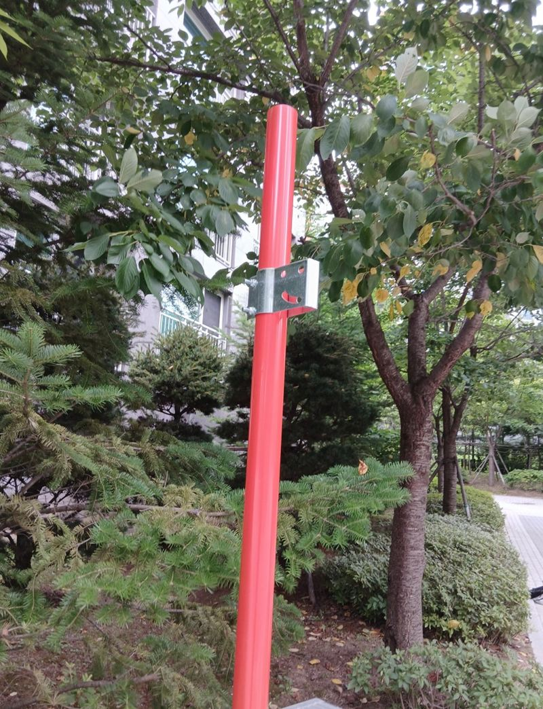
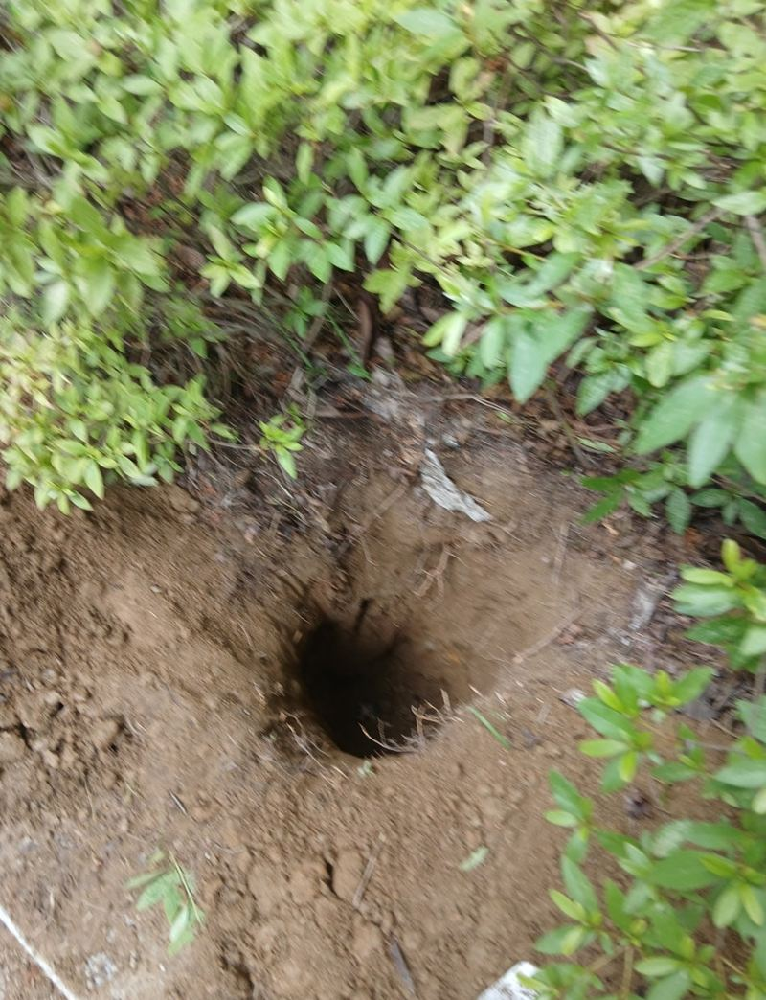
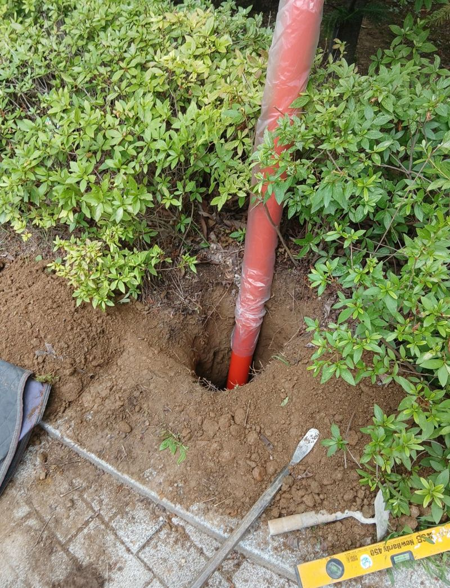
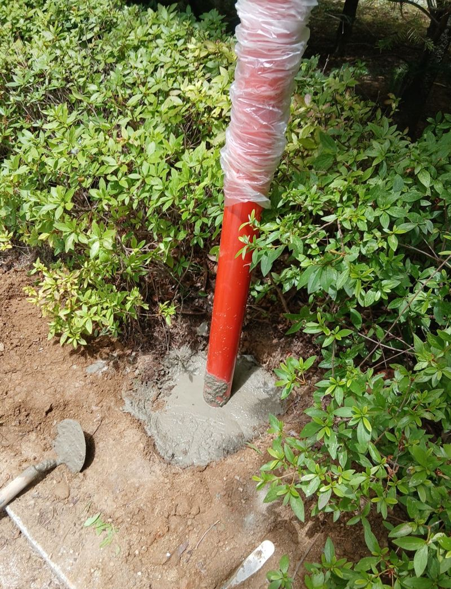
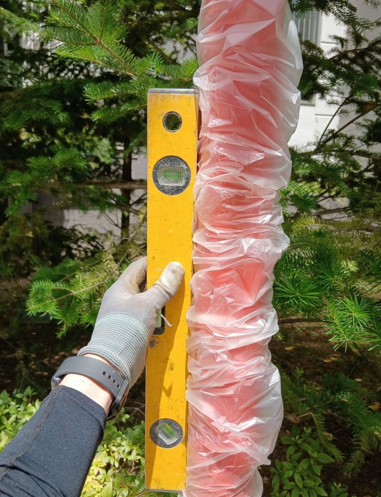
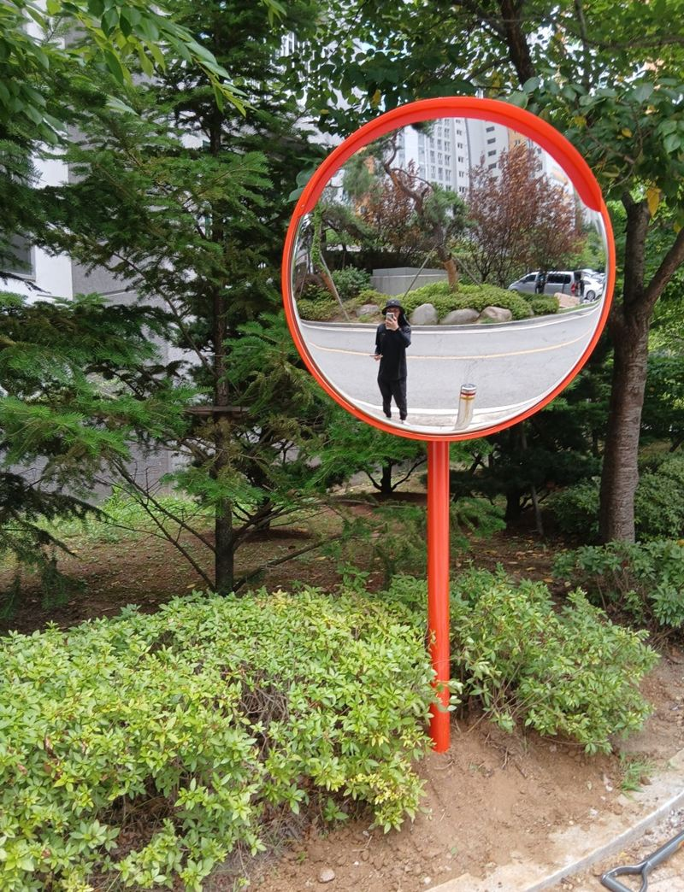

인천 미추홀 곡선도로 코너 반사경 설치 방법
← 밀어서 전후 비교 →
"코너가 좁아서 차끼리 서로 안 보여요. 사고 날 뻔했어요." 인천 미추홀구 주안 아파트 단지였어요. 진입로가 화단을 끼고 휘어져 있어, 들어오는 차와 나가는 차가 코너 직전까지 서로를 못 봤어요. 아이들이 걸어 다니는 길이기도 했고요. 운전석 눈높이에서 반대편이 보이는 자리를 찾아 화단 코너에 기둥을 묻고, 실제 진입 방향에 맞춰 거울 각도를 잡았어요.
| 현장 | 인천 미추홀구 주안 아파트 단지 진입로 코너 |
|---|---|
| 문제 | 곡선 구간 시야 부족, 차량·보행자 충돌 위험 |
| 한 일 | 가시거리 확인·위치 선정 → 땅 파기 → 기둥 세우고 몰탈 고정 → 수직 확인 → 거울 방향 조정 → 동선 따라 시야 확인 |
| 함께 한 것 | 주차장 외벽에는 벽부형 반사경도 설치 |
반사경 위치 정하기
반사경은 어디 세우느냐가 거의 전부예요. 자리가 10cm만 달라도 거울에 비치는 구간이 바뀌어, 정작 봐야 할 곳이 안 보일 수 있어요. 그래서 먼저 차가 들어오는 방향에서 운전석 눈높이로 코너 너머가 어디까지 보이는지 쟀어요.
- 높이운전자 눈높이에서 거울 가운데가 잘 보이는 높이로 맞춰요.
- 햇빛·조명낮에 해가 비쳐 눈부시거나 밤에 가로등이 비치는 방향은 피해요.
- 보행자화단 안쪽에 세워 걷는 사람 동선을 막지 않게 했어요.

매립형 기둥 세우는 순서
깊게 파기
기둥이 흔들리지 않도록 30cm 이상 깊이로 팠어요. 짧게 묻으면 바람이나 진동에 금방 기울어요.


몰탈로 고정
기둥 둘레를 시멘트 몰탈로 채워 단단히 잡았어요. 충분히 굳을 때까지 기둥을 건드리지 않게 했어요.

수직 맞추기
수평계를 기둥에 대고 앞뒤·좌우로 곧게 섰는지 봤어요.

거울 방향 조정
실제로 차가 들어오는 방향을 따라가며 코너 너머가 비치도록 각도를 맞춰 고정했어요.
설치 후 확인한 것
설치가 끝나면 차가 다니는 길을 따라 걸으며, 운전석 높이에서 거울로 반대편 차와 사람이 다 보이는지 확인했어요. 밤에도 잘 보이는지 반사띠 상태도 봤고, 거울 테두리 주변을 닦아 마무리했어요.

고객분은 "차가 지나갈 때마다 반사경이 정말 잘 보인다"고 하셨어요. 주차장 안쪽 외벽에는 콘크리트에 브라켓을 앵커로 박아 벽부형 반사경도 함께 달았어요.
반사경이 필요한 곳
- 단지 안 곡선 진입로화단이나 건물 모서리 때문에 반대편이 가려지는 길이에요.
- 주차장 출입구 코너들어오는 차와 나가는 차가 서로 못 보는 자리에 많이 달아요.
- 아이들이 다니는 길어린이집·학교 앞 골목은 키 작은 아이가 차에서 잘 안 보여요.
- 밤에 어두운 길반사띠가 있는 반사경이 전조등 빛을 받아 잘 보여요.
코너 반사경 설치 질문
매립형과 벽부형은 어떻게 골라요?
코너 옆에 벽이 있으면 벽부형, 화단이나 길가처럼 벽이 없으면 기둥을 묻는 매립형을 써요.
거울 크기는 어떻게 정하나요?
비춰야 할 거리가 멀수록 큰 거울이 좋아요. 길 폭과 차량 속도를 보고 정해요.
바닥이 콘크리트예요.
코어로 구멍을 뚫어 기둥을 묻거나, 바닥 고정형 받침을 써요.
거울에 김이 서려요.
김 서림 방지 처리된 거울로 바꾸면 줄일 수 있어요.
기존 반사경 각도만 바꿀 수 있나요?
브라켓이 멀쩡하면 각도 조정만 해요. 녹슬어 안 움직이면 부품을 바꿔요.
학교·어린이집 앞도 하나요?
학교, 어린이집, 공장, 상가 주차장 등 차와 사람이 같이 다니는 곳 모두 해요.
반사경이 바람에 돌아가요.
브라켓 볼트가 풀렸거나 기둥이 흔들리는 거예요. 고정 상태부터 봐요.
거울이 깨졌어요.
기둥과 브라켓이 멀쩡하면 거울만 바꿔 달 수 있어요.
다른 반사경·출차등 현장
운전석에서 코너를 바라본 사진과 세울 자리 사진을 보내 주세요.
전화 상담 010-4517-9872